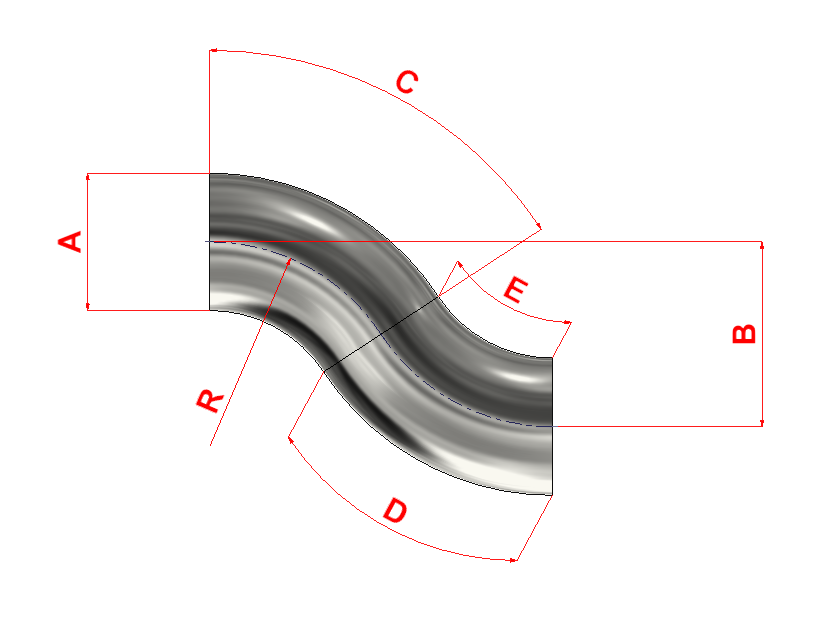

Datos de entrada

B se mide entre ejes (desnivel total de los dos codos acoplados). R se mide al eje del tubo.
Fórmula: B = 2·R·(1 − cos C) → C = arccos(1 − B/(2R))
Condiciones: 0 < B ≤ 4·R y R > A/2.
Dos codos acoplados — Entrada: diámetro (A), desnivel total (B) y radio del codo (R) — Salida: ángulo por codo (C) y arcos exterior (D) e interior (E)
Creado por: J.N.G

B se mide entre ejes (desnivel total de los dos codos acoplados). R se mide al eje del tubo.
Fórmula: B = 2·R·(1 − cos C) → C = arccos(1 − B/(2R))
Condiciones: 0 < B ≤ 4·R y R > A/2.